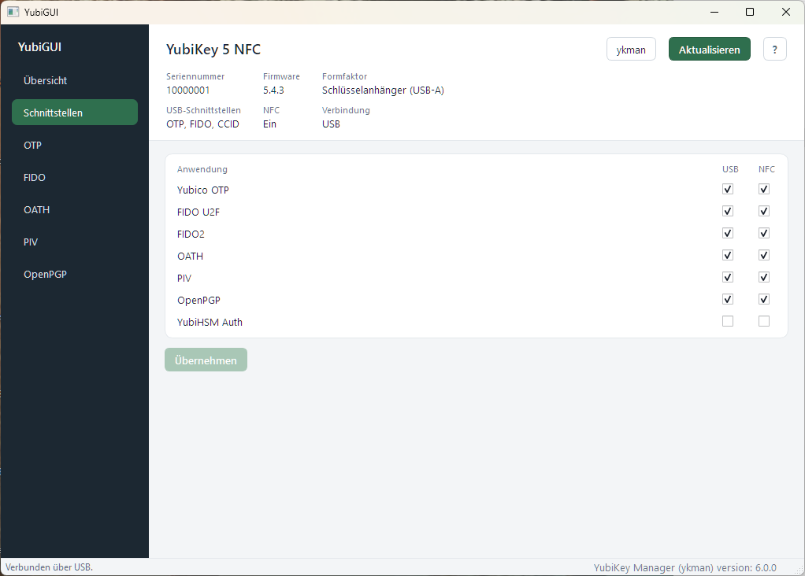

Schnittstellen
Dieselben Anwendungen wie in der Übersicht, hier als Schalter. Übernehmen schreibt die Änderung. Vorher zeigt das Fenster, was ein- und ausgeschaltet wird.

Ein schon gesetzter Lock-Code wird abgefragt. Einen neuen Lock-Code legt YubiGUI nicht an.
Ändert sich eine USB-Schnittstelle, verbindet sich der Key kurz neu. Eine reine NFC-Änderung lässt die Verbindung stehen. Hat der Key kein NFC, gelten die Schalter für USB. Liegt er auf einem Lesegerät, wird über diese Verbindung geschrieben. Eine USB-Änderung gilt dann beim nächsten Einstecken.